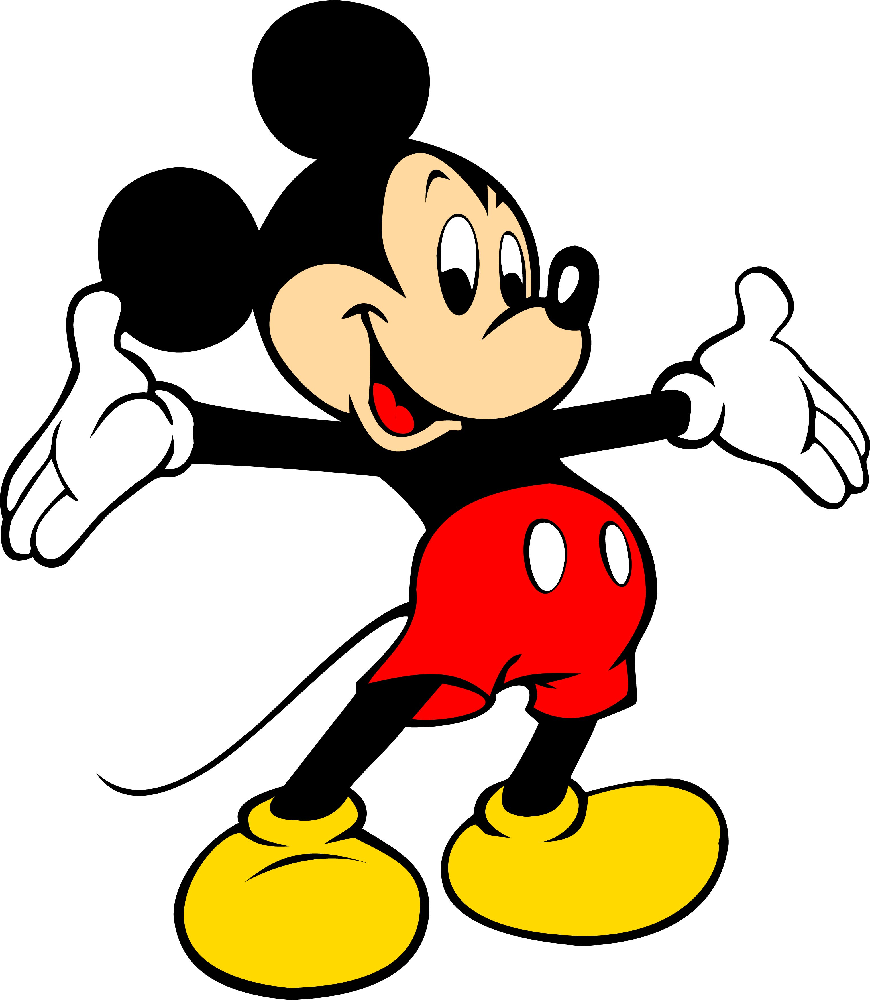
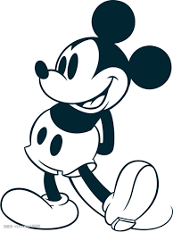
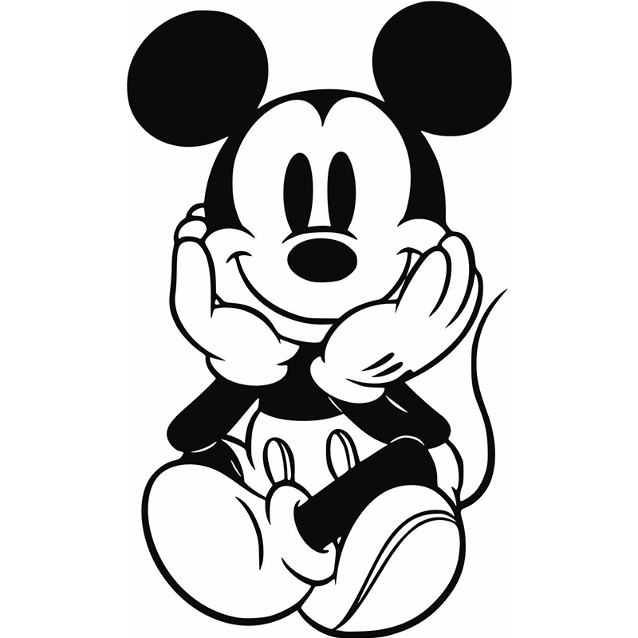

Mickey Mouse
米奇老鼠（又稱米老鼠或米奇；英語：Mickey Mouse），是一個於1928年由華特·迪士尼和烏布·伊沃克斯於華特迪士尼工作室創作的卡通人物。米奇老鼠是一隻擬人化的黑色老鼠，且通常穿著紅色短褲、黃色大鞋和白色手套。作為華特迪士尼公司的官方吉祥物，米奇老鼠是世界上最知名的卡通人物之一。
>  從小會喜歡米老鼠的原因其實很簡單，因為從我有記憶開始，我家就只有米老鼠的娃娃，還有書跟很多很多迪士尼的雜誌，在這樣「沉浸式」的環境底下，培養了我對米老鼠的熱愛
>P.S 雖然我喜歡米老鼠，但是我對米妮完全沒有好感，因為他是米老鼠的女朋友，簡單來說就是我的情敵!!!!
have a nice watching!
以下為米奇和他朋友們的簡單介紹
>| 米奇, 淘氣又頑皮、天性樂觀 | 米妮, 善良、溫柔，容易害羞 |
| 唐老鴨, 幽默友善、但急性子 | 黛絲, 時髦自信、有時強勢 |
而身為一個迪士尼(米老鼠)迷，此生最想去拜訪的地方便是迪士尼樂園啦!
雖然迪士尼的動畫及產品一開始出於美國，但是很多地方都有迪士尼樂園，
也因著每個地方的國情跟文化不同，樂園內的設施及風格也都不太一樣。